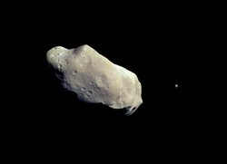
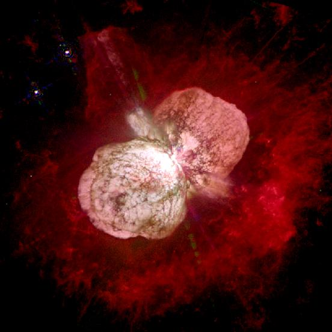
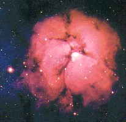
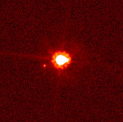
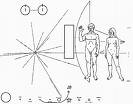

Quiz1 - Answers
Q1. Why does Venus have very shallow craters ?
Ans. Venus has shallow craters because they were formed after Venus was
resurfaced. Since then, there has been very little geologic activity and weathering. Furthermore, small projectiles vaporize or break up in the
Venusian atmosphere before they reach the surface, so the possibility of their making new huge craters is also diminished.
Q2. The image below is that of an asteroid and it's moon (yes asteroids have
moons! ) Name the asteroid and the moon.

Ans. The asteroid is Ida and the name of the moon is Dactyl.
Q3. What object looks like a star but gives off the energy of hundreds of galaxies?
Ans. Quasar.
Q4. One of the strangest observatories is located in a mine in South Dakota, USA. What does it observe?
Ans. Solar neutrinos. It has a chlorine detector with 470 metric tonnes of fluid used to
measure deficit of electron neutrino from Sun. ( There were varied answers to
this, including hail stones and seismic activity!)
Q5. The object shown in the image is a highly luminous hypergiant double star. Estimates of its mass range from 100–150 times the mass of the Sun, and its luminosity is about four million times that of the Sun.
What is it?

Ans. Eta Carinae.
Ans. Perhaps this question was phrased wrongly. Many people wrote - 7 min 29 sec.(it is yet to occur on July 16,
2186). That is for Earth's solar eclipse. Other planets have eclipses too and
more frequently (See picture below - A rare triple eclipse on Jupiter).
Only one person got the right answer, 21 hours.
Q7. What is the unescapeable boundary of a black hole known as
Ans. Event
horizon
Q8. Asteroids are classified according to what
a.Density
b.closeness to earth
c.diameter
d.spectra
Ans. d - Spectra
Q9. What is the centre of a comet called?
a: Epicentre
b: Core
c: Nucleus
Ans. c - Nucleus
Q10. During its mission Stardust will make this many trips around the sun
a.2
b.10
c.3
d.1
Ans. c - 3
Q11. A comets tail point towards
a.Toward the north star
b.Toward the sun
c.Toward the earth
d.away from the sun
Ans. d. away from the sun
Q12. The very bright stars Alpha Centauri and Beta Centauri point towards
a.Cassiopeia
b.The Big Dipper
c.The Southern Cross
d.The Milky Way
Ans. c -The Southern Cross
Q13. The nebula below is:

Ans. Trifid nebula
Q14. What is common to the names of the Black family tree in the famous series Harry Potter?
Ans. They are all named after stars or constellations. Eg. Sirius Black, Bellatrix Black, Regulus Arcturus Black , Andromeda Tonks, Alphard. Other (not in Black family) are Merope Gaunt, Lucius Malfoy, Draco Malfoy.
Q15. The object shown below caused a considerable confusion amongst astronomers recently. What is it?

Ans. The 'tenth planet' , Eris ( also 2003 UB313 ). It is bigger than Pluto and it's discovery led to the demotion of Pluto to 'dwarf planet'.
Q16. Which recent (comparatively) event could be used to determine the value of the Astronomical unit (AU) ?
Ans. Venus transit of 2004
Q15. This planet was hypothesized to exist in an orbit around the Sun even closer than Mercury. It was proposed to explain a small perturbation in Mercury's orbit. It also appears as a star system in the TV series 'Star Trek'. What is it?
Ans. Vulcan
Q18. What is this?

Ans. Plaque fixed on the two Pioneer spacecrafts ( not Voyager!) If the space probe is ever found by extraterrestrial intelligences, this message is meant to provide information about the origin of the spacecraft. It includes a drawing depicting a man, a woman, the transition of a hydrogen atom, and the location of the Sun and Earth in the galaxy.
By: Saurabh Chatterjee, Rahul Khandelwal
Mail us at astronomy.iitk@gmail.com for suggestions and comments